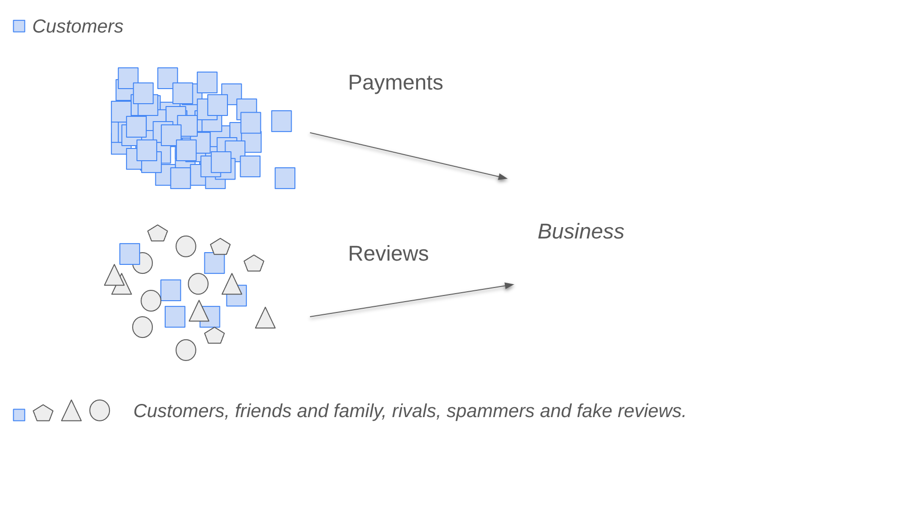
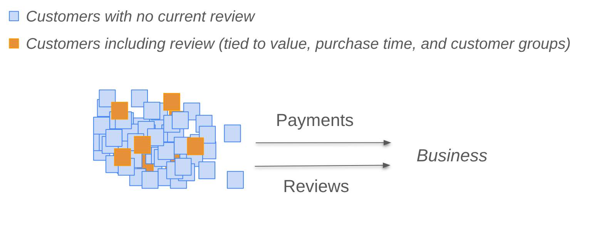
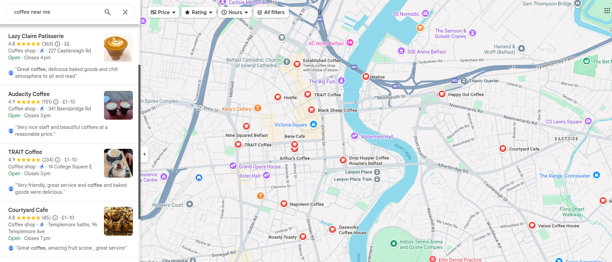

By connecting reviews to payments through the Lightning network we give customers a better guide on the best products and services right now. We give businesses the chance to learn more about what makes customers love their brand and come back for more. By connecting to the payments themselves we filter out malicious and spam feedback from non customers, making real reviews mean more.
Currently payments and reviews are disconnected, reviews do not always represent customers.

With Thunder only customers can provide a review.

Try It Now
Send a test transaction and followup with a review, see how it then appears in our table of data.
Test Thunder Reviews →Features & Benefits
- Reviews from true buyers validated by actual transations
- Sales platform and Lightning wallet agnostic
- Ratings and Feedback segmentation
- Over time
- By different customer group
- By spend
Current System - Which would you choose?
Coffee Shop Comparison
| Alpha Coffee | 1st Coffee |
|---|---|
|
4.8 Stars (240 Reviews) |
4.7 Stars (2,300 Reviews) |
Reviews spread across multiple platforms, platform specific.
Review score and number of reviews are key to make your decision.
Reviews by high spend, low spend and no spend customers are all equally valued.


Thunder Reviews
| Alpha Coffee | 1st Coffee |
|---|---|
|
4.8 Stars 84 reviews in the last 30 days Average Spend $15.60 |
4.1 Stars 19 reviews last 30 days Average Spend $20.40 |
Recency and amount spent are key to understanding true performance from reviews reporting. Even taking into account how different customers score higher and lower can be taken into account.
Benefits of Thunder Reviews
- Any lightning payment can be routed through Thunder Reviews providing opportunities for greater customer feedback.
- As well as score and number of reviews, recency of reviews and purchase value can be taken into account.
- Once established filtering by connections and trusted reviewers you can view by ratings of those you trust most with similar taste to you.
- Emerging trends and significant changes in performance can be identified by customers and business owners more quickly.
- High performing staff, time of day or products can be identified more easily.
3 Example use cases, benifiting customers, businesses and those wishing to promote both Bitcoin and Lightning.
Sales Teams
- Sales teams can track there feedback.
Visiting a New City
- See the places your friends, family and trusted reviewers have visited and how they liked it.
Long Term Performance
- High value products and services you can review after you have experienced, or even months or years into using the product, Thunder helps tie reviews back to true purchase.
Benifits for Customers
- Reviews are more likely to fairly represent true customer experience, skewing by non cusomters is avoided. Higher spendings, and more frequent purchasers can be taken into account more. Customers can also filter to look at products and services used by their friends, family and trusted influencers.
Benifits for Businesses
- Businesses can more closely monitor customer satisfaction directly related to spend. For example high performing sales staff, times of day or day of week where low or high reviews are seen most, how price changes impact customer sentiment.
Benifits for Bitcoin and Lightning Adoption
- This cannot be done using current payment rails, it also cannot be done on the Bitcoin base chain at scale. This shows the power of the Lightning network on Bitcoin. Being payment processor and platform agnostic gives it a greater potential to fairly represent a broader base of customers.
Lightning Network
A decentralized network enabling instant, scalable, and low-cost Bitcoin payments using off-chain channels.
Visit lightning.network →Map of Merchants
Check out a map of places currently accepting Lightning payments.
Find places to spend sats wherever you are →